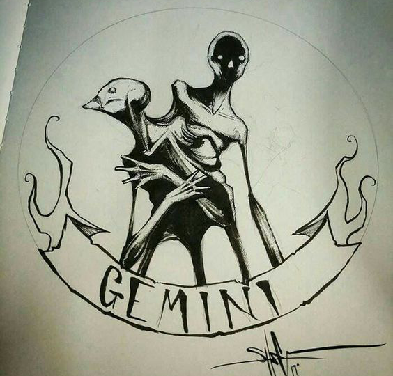
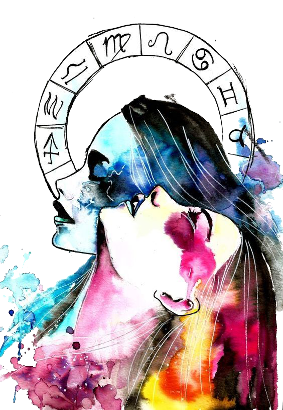

Love: It ain’t easy for an ever-changing Gemini. As the sign of the Twins, you have so many sides to your personality, it’s hard to find one person who’s compatible with them all. You need a soulmate who is also your playmate. For you the fun, flirty stuff IS “serious.” Only a few special people understand that — and these are the ones you should go after.
 The Gemini symbol is that of a pair of twins. This is because this sign rarely likes to do anything alone. Gemini are never happier than when they are sharing ideas and concepts with someone else. Communication is a key element for this sign, so many of this sign go into occupations that include some communication in some large capacity. Curiosity is a key characteristic of this sign, and they are people persons. Gemini are great at parties because they can find almost anything to talk about with anyone. Gemini are adventurous by nature and so engage in traveling as often as they can as it affords them the opportunity to meet new people, experience new ideas, and to learn new concepts.
Gemini are great conversationalists, and are charming people. Interesting to speak with, Gemini know a little bit about a lot of things. They have a great sense of humor and are generally optimistic people. Gemini often make their own fun, despising boredom.